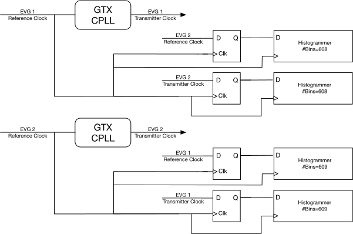

Firmware
NOTE: To allow testing at the ALS the dual event
generator FPGA software has been compiled with a set of parameters
different from those described in this document and the entire facility is run from EVG1. To use at the ALS-U the definitions in the config.h header file must be
restored to their ALS-U values and the application rebuilt. The values used for testing at the ALS are:
CFG_EVG1_CLK_PER_HEARTBEAT 124640000
CFG_EVG1_CLK_PER_BR_AR_ALIGNMENT 10250
To keep the FPGA as responsive as possible to EPICS IOC requests the
firmware provides two µBlaze processors. The first is used for
console and display updates and for reading and writing the non-volatile
memory. The second is used for EPICS communication, encompassing
both event generator status publisher and event system server.
Configuration Parameters
The following table describes some the configuration parameters
shared between the FPGA software and firmware.
Parameter
|
Value
|
Description
|
CFG_MINIMUM_INJECTION_CYCLE_MS
|
990
|
The lower limit on the time,
in milliseconds between injection cycle requests. The
injection cycle time is specified by the first line of the DefaultSequence.csv file.
|
CFG_MAXIMUM_INJECTION_CYCLE_MS
|
2010
|
The upper limit on the time,
in milliseconds between injection cycle requests. |
CFG_HARDWARE_TRIGGER_COUNT
|
6
|
The number of hardware
triggers.
|
CFG_DIAGNOSTIC_INPUT_COUNT
|
1
|
The number of diagnostic
inputs.
|
CFG_DIAGNOSTIC_OUTPUT_COUNT
|
1
|
The number of diagnostic
outputs. |
CFG_SEQUENCE_RAM_CAPACITY
|
1024
|
The size of the event
sequence RAM. Long intervals between events consume
more than one entry so the actual maximum sequence length may be less than this value.
|
CFG_EVG1_CLK_PER_RF_COINCIDENCE
|
608
|
The number of cycles of the
first RF reference clock to return to the same phase offset
relative to the second RF reference clock.
|
CFG_EVG2_CLK_PER_RF_COINCIDENCE
|
609
|
The number of cycles of the
second RF reference clock to return to the same phase offset
relative to the first RF reference clock. |
CFG_EVG1_CLK_PER_HEARTBEAT
|
121296000
|
The number of cycles of the
first RF reference clock between heartbeat events on the
first event generator link.
|
CFG_EVG2_CLK_PER_HEARTBEAT
|
124640000
|
The number of cycles of the
second RF reference clock between heartbeat events on the
second event generator link. |
CFG_EVG1_CLK_PER_BR_AR_ALIGNMENT
|
46208 |
Number of clocks between booster and accumulator ring coincidence -- clock tree (N/E)
|
The relationships between the per-generator parameters can be
summarized as:
where
and
are the frequencies of the reference clock inputs. The
reference clock inputs are driven at 1/4 the rate of the master
oscillators for the two frequency domains. Note that the
heartbeat intervals are are not the same. At the nominal storage
ring RF of 500.392263 MHz the coincidence interval between the frequency
domains is about 4.868 µs, the heartbeat interval for event generator 1
is about 970 ms and for event generator 2 about 998 ms.
If changes are made to any of these parameters the createVerilogIDX.sh script must be run and the firmware and software rebuilt.
Clock Synchronization
Each event generator in the FPGA is synchronized to the RF master
oscillator driving its part of the accelerator. Each master
oscillator is divided by 4 and taken to the FPGA over a fiber
link. These reference clocks drive an FPGA transceiver
reference PLL and a sampling D flip-flop as shown in the following
figure. The rising edge of the sampled signals indicates the
phase of the signal relative to the sampling clock. The
sampled values are used to update a histogram whose number of bins is
the number of sample clock cycles in the coincidence interval. The
sampling of both the event generator transceiver reference and PLL
output provides an accurate measurement of the phase of the signals
relative to the sampling clock and by extension, relative to each
other. Thus the phase at which the PLL has locked its output
relative to its input can be determined as can the point where the
PLL output clocks align most closely.

There are two levels of event system clock alignment. The
first is the alignment of the transceiver clock output relative to
the transceiver reference. Each transceiver output clock
drives all the logic in its event generator firmware. The
transceiver output clock can be at one of twenty possible phase
offsets relative to the incoming reference. The actual offset
is randomly set when the PLL locks to its reference. This
random selection is not acceptable for this application so on
startup the transceiver is repetitively reset until it happens to
lock at the desired phase offset. The result is an event
stream correctly aligned with its the reference. The
crosspoint switch on the FMC card could be used to remove the
transceiver
reference clock momentarily as an alternate way to force the
transceiver to
resynchronize, but this capability is currently unused.
The second clock alignment is the coincidence between the two RF
clock domains. The coincidence is determined by the
point at which the rising edge of the sampled clock aligns most
closely with the rising edge of the FPGA clock using the D flip-flop sampling logic shown above. The heartbeat
event in each clock domain is aligned with this coincidence.
The reference clocks are connected to FPGA bank 115 as shown below. The Marble clock crosspoint switch is
configured to to route the reference
clock from the first FMC card (FMC1_GBTCLK0_M2C) to the first MGT clock
of the bank (MGTREFCLK0_115) and the reference clock from the second FMC
card (FMC2_GBTCLK0_M2C) to the second MGT clock of the bank
(MGTREFCLK1_115).
The
third transceiver in the bank drives the first
FMC card and the first transceiver in the bank drives the second FMC
card.
7 Series FPGAs GTX/GTH Transceivers User Guide (UG476)
Special Event Codes
The following event codes have special meaning.
- 0 – Idle event code. Emitted when no other event code
request is present.
- 112 (0x70) – Shift a 0 bit into event receiver 32 bit
time-of-day shift register.
- 113 (0x71) – Shift a 1 bit into event receiver 32 bit
time-of-day shift register.
- 122 (0x7A) – Heartbeat event.
- 125 (0x7D) – Pulse-per-second event. Copies time-of-day
shift register contents into event receiver time stamp 'seconds'
and clears the time stamp 'tick' counters.
Event Source Precedence
There are several sources that can request an event code be
placed in the output stream.
An event code slot can be occupied by at most a
single event code so the sources are assigned a priority with
the event corresponding to the highest priority request being
emitted when two or more requests are present simultaneously.
The sources and their priorities are as follows.
- Sequence pattern event requests have the highest priority and
are never omitted or shifted to a later event code slot.
It is good practice to minimize the
shifting of lower priority events by providing at least one empty slot between sequence pattern events.
- Heartbeat events are never shifted to a later event code
slot. If a heartbeat event request and a sequence pattern
event request occur simultaneously the heartbeat event request
is ignored.
- Pulse-per-second event requests are delayed to the first
available event code slot following sequence pattern or
heartbeat events.
- Hardware triggered event requests are delayed to the first
available event code slot following sequence pattern,
heartbeat, or pulse-per-second events. If multiple hardware triggers are present the lowest numbered input takes
precedence.
- Software triggered event requests are delayed to the first
available event code slot following sequence pattern,
heartbeat, pulse-per-second, or hardware triggered events.
- Time-of-day (POSIX seconds) events are delayed to the first
available event code slot following all other event
requests. This has no effect on the operation of the
timing system as long as all 32 time-of-day events arrive before the next pulse-per-second event.
Distributed Data Bus
As described in the following table, four of the distributed data bus bits are used by the event generator firmware.
Bit
|
Description
|
0
|
Square wave. Rising edge is
coincident with heartbeat event, or where a heartbeat event would have
occurred had it not been preempted by a sequence pattern event.
|
1
|
100 kHz square wave used by round-trip latency measurement firmware. |
2
|
State of the diagnostic input.
|
3
|
Toggles at each assertion of the
pulse-per-second hardware input line. The corresponding PPS event (125) will be
delayed from this when preempted by a sequence or heartbeat event.
|
4-7
|
Unassigned.
|
Time Providers
During normal operation the event generator tracks the progress of
time by incrementing the number of POSIX seconds each time the 'pulse
per second' marker is asserted. At startup, and whenever the pulse
per second marker resumes after an interruption, the event generator
obtains the current number of POSIX seconds from the selected time
provider. The event generator can use either of two possible time
providers, namely an NTP server on the network or a GPS receiver card.
GPS Time Provider
A Digilent GPS PMOD card can be
used to supply the time of day and pulse per second references required
by the dual event generator. Connect the PMOD card to the ‘odd’
side of the Marble PMOD1 connector (J12 pins 1, 3, 5, 7, 9, 11) and set
the NTP server address to 0.0.0.0. The FMC pulse-per-second input
is ignored in this mode of operation. The event generator also acts as a stratum one NTP server when in this mode.
TFTP Server
FPGA
firmware, system parameters, and the default event sequence are
stored in flash memory in a psuedo-filesystem. A TFTP server
provides access to the following 'files':
Name
|
Description
|
DEVG_A.bit
|
Primary FPGA bootstrap.
|
DEVG_B.bit
|
Secondary FPGA bootstrap. Used
if the primary bootstrap file is missing or damaged.
|
SystemParameters.bin
|
The internal representation of
the network configuration system parameters. |
DefaultSequence.csv
|
A
'Comma Separated Values' file specifying the default
injection sequence. The first line is the time, in
milliseconds, between injection cycle requests. The
following lines contain delay,event pairs. Delay
values are in units of event generator ticks, about 8 ns
each. This is the sequence that will be generated when
no other injection sequence has been requested by the
IOC. This ensures that a valid injection sequence is
generated even if network or IOC issues prevent requests
from reaching the FPGA. A line with a third column
containing an asterisk (*) marks this event as the one that
will clear bit 4 of the sequencer status. Event code 127 marks the end of the table.
|
FullFlash.bin
|
The entire 16 MB flash memory.
|
FMC1_EEPROM.bin
|
The
IPMI EEPROM of the card installed in the first FMC slot.
|
| FMC2_EEPROM.bin |
The
IPMI EEPROM of the card installed in the second FMC slot. |
Note:
- The files must be transferred in 'binary' mode.
- Don't attempt simultaneous transfers from multiple clients.
- The very basic filesystem emulation does not record the sizes
of the '.bin' or '.bit' files. Downloading these from the FPGA will transfer the
full area available so the resulting downloaded file will
contain the uploaded file followed by some number of extra
values.
- An IPMI EEPROM can be written only when the 'Write Enable'
jumper is in place on the FMC card.
Setting Network Parameters
- Depress the "Reset/Recovery" push button on the front panel while
the system is powering up or rebooting. This sets the IPv4
network address to 192.168.1.129/24, the Ethernet MAC address to
AA:4C:42:4E:4C:04, and the NTP server address to 0.0.0.0.
- Connect the chassis to a 192.168.1.0/24 network and run the console.py script from a host
on that same network.
- Use the mac, net, and tod commands to set the
Ethernet, IPv4 addresses, and NTP server address, respectively.
- Reboot or power cycle the system.
Alternatively, a terminal
emulator program and USB cable can be used to communicate with
the system through its USB console serial port (115200-8N1) to
issue the desired commands.
Console Commands
The FPGA sends
startup and diagnostic messages to its USB console serial port and
to a UDP port accessible through the console.py script. The
serial port is run at 115200-8N1. Commands are entered
using a simple command line interpreter. There is no command
history and the only editing available is the backspace or delete
key which erases the character currently at the end of the
line. A carriage-return or line-feed character marks the end
of a line. Only enough of a command to make it unique is
required. Since no existing commands share a common leading
letter this means that only the first character of a command is
needed. The commands are:
- boot [-b]
- The FPGA prompts for confirmation and then restarts as if
powered up. If the optional -b
argument is present the 'DEVG_B.bit' file will be used, otherwise the 'DEVG_A.bit' file will be used.
debug [-s] [n]- The debugging flags are set to the specified value, if one is
given. The bits are
- Bit 0 — Enable messages related to the EPICS UDP port.
- Bit 1 — Enable messages related to the TFTP UDP port.
- Bit 2 — Enable messages related to flash memory I/O
transactions.
- Bit 3 — Enable messages related to the time of day state machine.
- Bit 4 — Enable messages showing GPS receiver sentences.
- Bit 5 — Enable messages showing sequence memory
updates.
- Bit 6 — Display the memories for both sequences of both event
generators.
- FPGA response to IOC requests is inhibited
while a sequence is being displayed – don't do this during operations.
- Bit 7 — Show the control/status register for each transceiver after a change of the reset control bits.
- Bit 8 — Enable messages showing operation of the PLL receiver synchronization state machine.
- Bit 9 — Enable messages showing operation of the event generator coincidence measurement state machine.
- Bit 10 — Show event generator coincidence measurement results.
- Bit 11 — Show the event generator coincidence measurement histogram buffers.
- Bit 12 — Enable log messages for each microBlaze bit-banging I2C operation (to MGT clock switch and FMC EEPROMs).
- Bit 13 — Enable log message for each EVIO I2C operation.
- Bit 14 — Enable log messages for each EVIO I2C register access.
- Bit 15 — Scan the I2C buses and report the devices attached to each.
- Bit 16 — Simulate a press and release of the front panel Display button. Clears automatically.
- Bit 24 — Dump the LCD screen contents to the console serial
line as an ASCII portable bitmap.
- Takes over a minute to
complete during which time no other display or console operations take place.
- Bit 25 — Dump the clock crosspoint switch registers.
- Bit 30 — Reset and realign both event generator transmitters.
- If the optional -s
argument is present the value of the debugging flags will be
written to flash memory and the flags will be set to that value
on startup.
- eyescan [-n] [-r] [n]
- Show the eye diagram for the high speed receiver of event generator n
(default 1). A full scan takes
several seconds to perform. EPICS communication and event
generator operations remain active while the scan is in progress. The -n
option changes the characters on the display from their default
'ASCII-art' values to hexadecimal numbers showing the floor of the
base-2 logarithm of the errorCount at each point. Points with zero
errors or with error count overflows are still shown as space or '@'
characters, respectively. The -r option prints the error count at each point.
- fmon
- Show the frequencies of the various FPGA clocks.
- log
- Replay console startup messages.
mac
[aa:bb:cc:dd:ee:ff]- Show the Ethernet MAC address if no argument is present
otherwise set the MAC address in flash memory. The FGPA
prompts for confirmation before writing to the flash memory.
- net [www.xxx.yyy.zzz[/n]]
- Show the network settings if no argument is present otherwise
set network parameters in flash memory based on the
argument. The network address is set to the specified
value. The netmask is set based on the optional network
address length (/n). If the network address length is
omitted a value of 24 (Class C network) is used. The FPGA
prompts for confirmation before writing to the flash memory.
- pll [evg1_target evg2_target]
- Show the
target
offsets between the transceiver PLL output and reference for
each of the event generators if no argument is present otherwise
write the specified values to flash memory. At boot time
the FPGA resets the transceivers until the offset between the PLL output
and reference match these values. The target value should be
adjusted whenever the firmware is rebuilt to reflect changes in signal
latencies within the FPGA.
- reg r [n]
- Show the contents of n (default 1)
general-purpose I/O registers starting at register r.
- tod [www.xxx.yyy.zzz]
- Show the IPv4 address of the NTP server if no argument is
present otherwise set the address of the NTP server in flash
memory based on the argument. The FPGA prompts for
confirmation before writing to the flash memory. To use the GPS receiver instead of an NTP server, set the NTP server address to 0.0.0.0.
Support Scripts
- console.py
[-a IP_name_or_address]
- Connect to the console port of the FPGA.
Building
Firmware
- Change directories to <TOP>/DualEventGeneratorMarble.srcs/sources_1/hdl/.
- Run the startVivado.sh script to start the correct version of Vivado.
- Click the 'Generate Bitstream' action in the Project Manager pane.
- It is necessary to export the hardware only if the µBlaze address
map has changed. To export use the File→Export→Export Hardware...
menu item to pop up the Export Hardware Platform window.
- Check that the 'Fixed' platform type is selected then click Next.
- Check that the 'Pre-synthesis' output is selected (i.e. do not export the bitstream) then click Next.
- Confirm that the export is going to <TOP>/DualEventGeneratorMarble.xsa then click Next.
- A window may pop up warning that the exported file already exists. If so, just confirm that you want to overwrite it.
- Check that the options are as desired then click Finish.
Software
It is necessary to run Vitis only when a new hardware specification has been written by Vivado. If this is the case:
- Change directories to <TOP>/Workspace/Processor0/scripts.
- Run the startVitis.sh script to start the correct version of
Vitis. You can also start Vitis from Vivado using the Tools→Launch
Vitis IDE menu item.
- Confirm that the workspace is set to < TOP>/Workspace then click Launch.
- Right-click on the DualEventGeneratorMarblePlatform in the Explorer pane and select Update Hardware Specification.
- Confirm that the Hardware Specification File is <TOP>/DualEventGeneratorMarble.xsa then click Ok.
- Click Ok in the window that pops up announcing the completion of the update.
- Use the Project→Build All menu item to build the support libraries and application.
- Continue with the following steps used when any changes have been made to the application source.
To build after making changes to the application source:
- Change directories to <TOP>/Workspace/Processor0/scripts.
- Run the startVitis.sh script with the argument 'bash' to start a
shell with the correct version of the Vitis tools on the shell
application search path.
- Run make. This should be done even if the Vitis Build All
operation described above has completed since the Makefile in the
<TOP>/Workspace/Processor0/scripts directory contains rules and
actions for ensuring that the software build date is correct and that
the final output file (download.bit) is generated.
USB/JTAG
To download an image to the FPGA or to run a ChipScope session
through the on-board USB/JTAG connection the ftdiJTAG application must
be run to create a Xilinx Virtual Cable. If the Marble USB/JTAG is
the only FTDI device connected to the computer the command would be:
ftdiJTAG -c 30M -g 11
If multiple devices are present then the full
'vendor:product:serial number' of the desired device must be specified,
for example:
ftdiJTAG -c 30M -g 11 -d 0403:6011:000004
The '-c 30M' argument forces the JTAG connection to run at its
maximum speed of 30 megabits per second. The '-g 11' argument
enables the Marble on-board USB/JTAG connection.
Refer to the ftdiJTAG(1) documentation for complete details including
instructions on how to get Vivado to connect to the Xilinx Virtual
Cable.
Support Scripts
The <TOP>/Workspace/Processor0/scripts directory contains some other useful scripts:
- programFlash.sh – program Marble flash memory from a downloadable bitfile.
- pushImage.sh – copy download.bit, programFlash.sh, and
DefaultSequence.csv to the dual event generator EPICS support module
<SUPTOP>/head/FPGA directory on the controls file server.
- programEEPROM.sh – program the IPMI EEPROM on a mezzanine card
mounted on a Marble. Make sure the write-enable jumper is
installed on the card before running this script.
- create_FMC_EEPROM.sh – create IPMI EEPROM images. This
script is a bit of a hack -- the script must be edited to set the
desired product name and serial numbers for the EEPROM images. But
it's good enough for the occasional time that it's needed. The
'fru-dump' program can be used to display the contents of an IPMI EEPROM
image. The fru-dump 'b', 'c', and 'p' options cause the board,
card, and power requirments, respectively to be displayed.